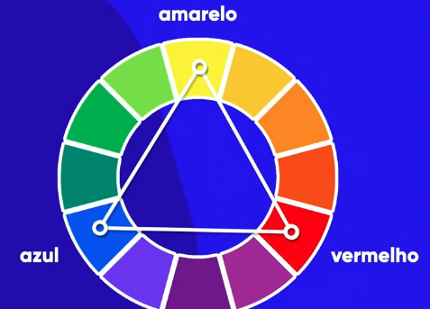

Anotações - Cores
Representando cores
Há 4 maneiras de representar cores:
- Seus nomes, em inglês;
- Padrão rgb(red, green, blue), onde os valores destas cores primárias variam de 0 a 255;
- A representação das cores em hexadecimal #000000(preto), #ffffff(branco);
- Padrão hsl(hue, saturation, luminosity).
Circulo cromático
- Cores primárias:
- Amarelo;
- Vermelho;
- Azul.
- Cores secundárias:
- Laranja - Amarelo + Vermelho;
- Violeta/Roxo - Azul + Vermelho;
- Verde - Azul + Amarelo.
- Cores terciárias:
- Amarelo-esverdeado;
- Amarelo-alaranjado;
- Vermelho-alaranjado;
- Vermelho-arroxeado;
- Azul-arroxeado;
- Azul-esverdeado.
Combinações e agrupamentos
- Temperatura e harmonia:
- Cores complementares:
- Cores análogas:
- Cores análogas mais uma complementar:
- Cores análogas relacionadas:
- Cores intercaladas:
- Cores triádicas:
- Cores quadráticas:
- Cores tetrádicas:
- Monocromia:
Observações e dicas:
- É recomendável que a paleta de cores para um site possua entre 3 e 5 cores, desconsiderando preto e branco que estão sempre presentes.
- Utilizar a cor primária do logo do site.